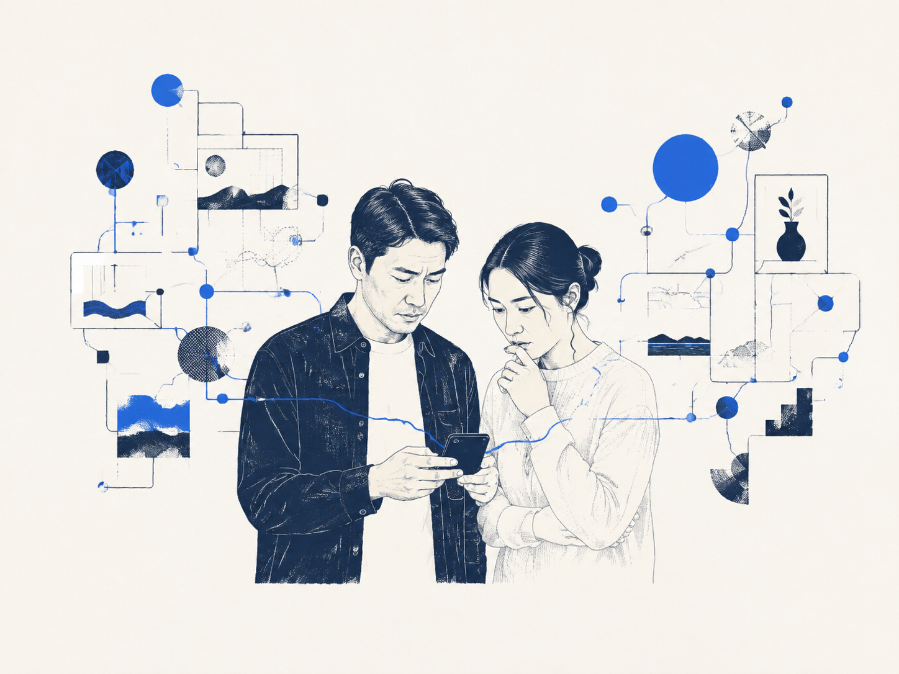
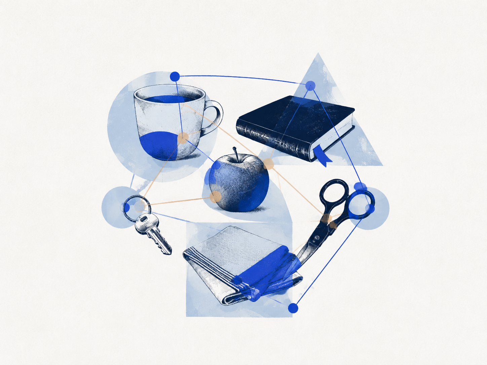
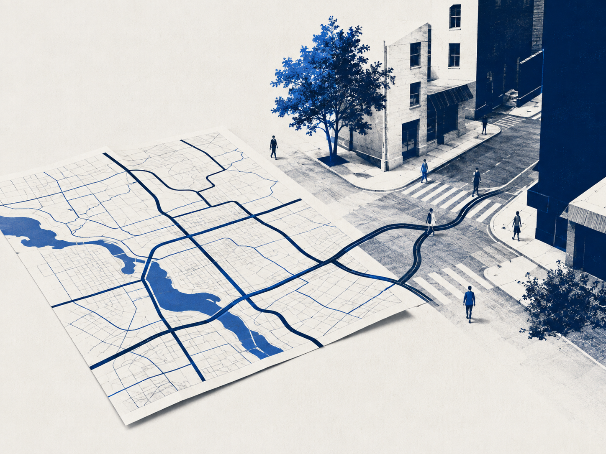
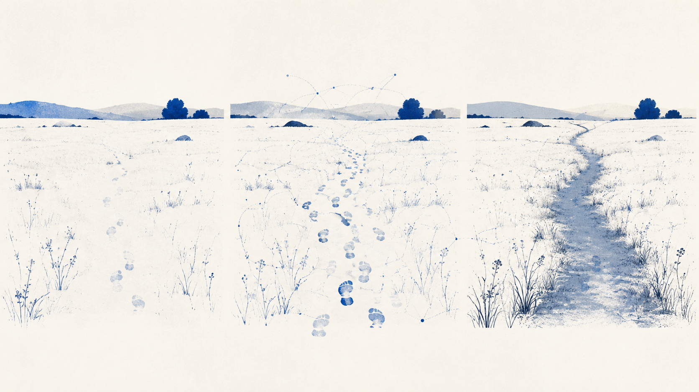

我们接触到的是信号，真正进入生活的是被组织过的结果。
群里出现一句“明天再说”。有人读到委婉拒绝，有人觉得只是时间不够。输入相同，注意、经历和期待却在各自参与理解。

训练让某些线索更快进入中央。它们组成了“这间屋子怎样工作”。
责任让另一组线索被优先选择。它们组成了“这间屋子是否安全”。
人没有把整个世界等比例收进来。人从世界里取出与自身条件有关的部分，再把它们连成一个可以行动的版本。
真正需要看的，不只是“输入了什么”，还有中间怎样被选择、连接和命名。
天空变暗、空气发潮，少数信号进入注意。
这些变化与过去的雨天经验被放到一起。
一组联系获得名字：“可能要下雨”。
关窗、带伞，并把判断讲给家人。
现实感常来自一条路径已经熟到不再被察觉。熟练提高效率，也会让中间的选择显得像“世界本来如此”。
杯子、书、苹果、钥匙，可以按颜色分，也可以按用途分。物件没变，被看见的相似与差别却变了。
概念参与了注意和连接，让某些关系突出，让另一些退到背景。

能够说出“害怕、羞愧、委屈、愤怒”的差别，感受才有机会被分别看见和处理。
模糊经验获得可以比较的边界。
内部感觉变成别人可以接近的线索。
人们围绕相近说法协调判断与行动。
经验越过当下，进入记录与传承。
语言不只给完成后的理解贴标签。它参与了理解怎样成形，也让一份经验能够被共同修订。
一次具体经验留下线索。
线索被命名、描述和比较。
多人多次使用，反馈修正路径。
经验被压缩成可重复使用的方法。
来源说明：原始转录在 4.1 节有一处缺文，现存原典副本同样缺失；本页未猜补，只沿用前后完整论证。
地图删掉气味、天气和行人的表情，只保留与用途有关的道路、方向与距离。
地铁图、驾车图和无障碍地图描绘同一座城，却突出不同关系。知识也会选择、简化和固定。

稳定让知识可以被传承；可修订让稳定不至于变成僵化。
这些条件既带来限制，也使清晰的理解成为可能。有限并不等于缺陷。
感官达不到、经验没发生、语言还没有相应区分，理解会停在边缘。
耳朵听不到所有频率，正因如此，有限的声音才可能形成可辨认的世界。

认知结构也会这样生长：一次连接带来结果，反馈让它更容易被采用，重复又把它变成不必多想就会启动的路径。
偶然连接出现，尚不稳定。
相近路径再次带来可用结果。
局部联系连成更大的组织。
路径开始反过来引导新的输入。
稳定提高行动速度，也可能遮住别的可能。反馈负责把路踩实，也负责提醒系统何时改道。
身体、注意、记忆、语言、文化与历史，为理解提供装置和起点。
仅仅等待不会自动带来理解；时间要承载尝试、反馈和重新组织。
理解不是把世界搬进来。理解，是让世界在我们这里获得一条能走的路。
本书刊是对原章的净言重述。它保留理论视角，也保留被质疑、被修订的空间。